Important Read the following guide before you start to migrate from 4.x to 6.x
The following represents functionality that has either been retired or pending in a future release.
By far the biggest change in Gemini 6 is the introduction of Project Templates - our approach to scaling Gemini to handle projects of different types.
Each Project Template is designed to provide specific screens, meta data and behaviors. For example you can use different processes and display different taxonomy on-screen for Agile, Scrum and Issue Tracking projects.
Project Templates replace the previous approach of using Schemes and Groups to organize re-usable meta data. For example, a software development Project Template may have processes such as Bug, Enhancement and New Feature but a ticketing Project Template may have processes such as Support Request, Investigation, etc.
The goal is to ensure that every project is based upon the most appropriate Project Template.
Each Project Template contains various meta data elements:
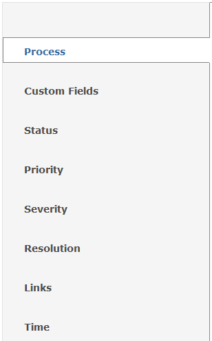
Processes map to what was previously labeled "Item Types" (e.g. Bug, Requirement, Change Request, etc.).
Custom Fields are still the same as Gemini 4.
These meta fields are the same as Gemini 4.
Resolutions can now vary by Project Template whereas in Gemini 4 the resolution meta data was the same across all projects.
Links function the same way as before except there is no notion of link direction.
By popular request Time types can now vary by project.
What has changed:
Important Screen setup from Gemini 4 WILL NOT BE MIGRATED OVER TO GEMINI 6. You will be required to re-set Screen definitions.
One of the biggest improvements in Gemini 6 is the way data fields are handled. More control has been provided so that you can completely which fields are displayed and to which group of users. Furthermore, you can also control the order in which fields are displayed on-screen (e.g. Priority is displayed before Type).
Another unique new feature of Screens is that you can completely hide certain processes users. For example, only "Developers" can view "Bugs" and only "Project Managers" can view "Change Requests".
Screens are customized by each Process:
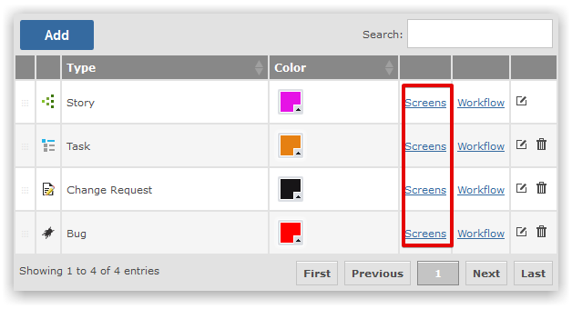
Clicking on the Screens link will allow you to define the Screen setup. You can also re-use Screens between Processes.
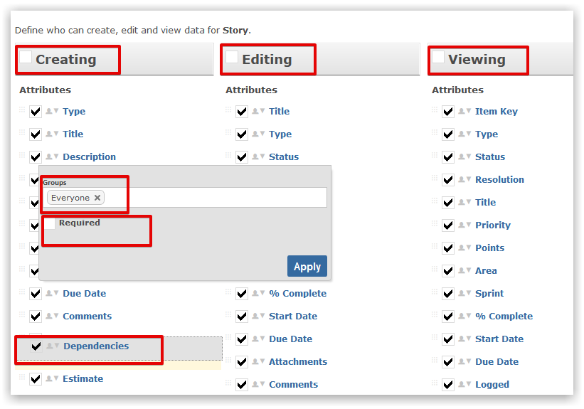
What has changed:
Important Workflow setup from Gemini 4 WILL NOT BE MIGRATED OVER TO GEMINI 6. You will be required to re-define Workflows.
Every process has it’s own Workflow to control how an item moves from OPEN to CLOSED state. You can re-use a Workflow across multiple Processes within the same Project Template.
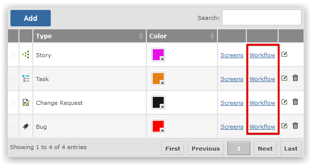
Clicking on the Workflow link will allow you to define the Workflow setup. You can also re-use Workflows between Processes.
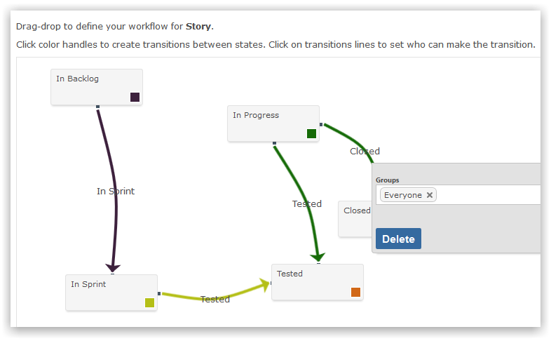
Just move around the boxes and connect them to define your workflow.
During the migration process all existing projects will automatically migrated to a special "Migration" Project Template.
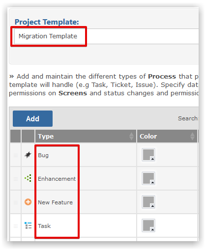
This template will contain previous meta data from Gemini 4 for reference purposes. All projects in Gemini will be temporarily allocated to the migration template during the migration process.
The objective from this point in the migration process is to ensure every project is allocated the appropriate template (i.e. no project should be using the migration template).
It is recommended that you do not modify, duplicate or otherwise change the Migration Template.
You should create or change the pre-packaged Project Templates to match what you need. For example, amend the Agile template to include the processes you wish to to manage:
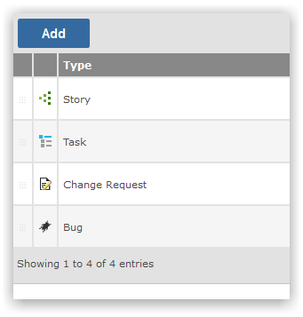
The objective is to prepare the following meta data per project template BEFORE you attach any projects to the template:
Ensure that you have appropriate meta data when you come to MOVE your projects from the migration template to project templates.
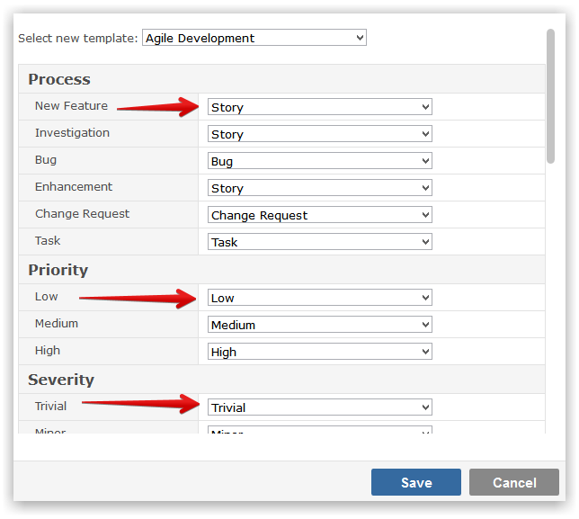
Important Ensure you have created your required custom fields before mapping the template.
Once you have readied Project Templates you should migrate each project from the Migration Project Template to an appropriate template. Click on the cog icon to do so:
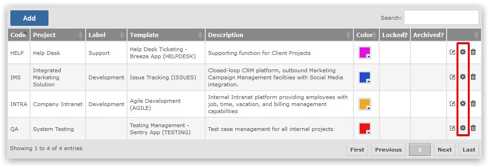
You can then choose how to map previous meta data to new Gemini5 meta data:
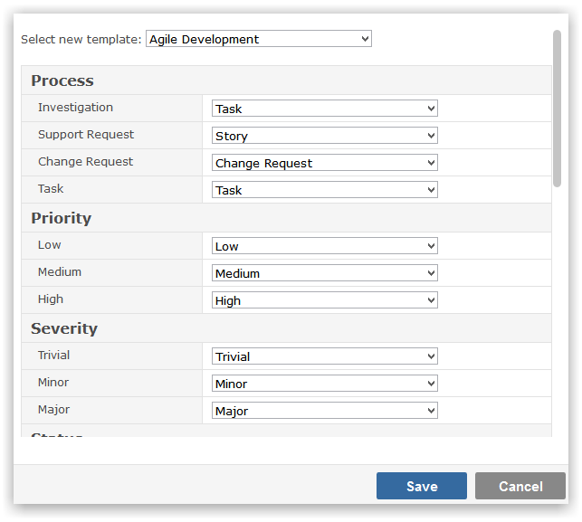
All existing user groups will be migrated intact.
However the method to allocate group members has changed.
The permissions model in Gemini 5 has been simplified down to 14 different roles that can be assigned to users.
Important Permissions setup from Gemini 4 WILL NOT BE MIGRATED OVER TO GEMINI 6. You will be required to re-define Permissions.
The objective:
Please ensure this step is complete BEFORE you attempt to navigate or otherwise use Gemini.
Gemini 6 sports a completely new and powerful way to subscribe to email notifications. You simply subscribe for updates on any Workspace.
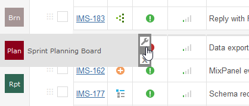
For example, you can set a filter to find items you care about and then select the type of notifications you wish to receive:
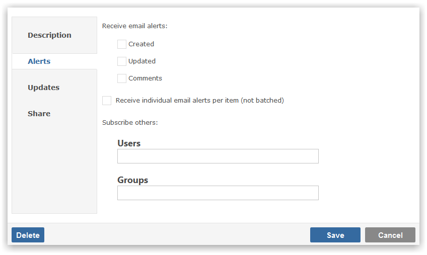
Email templates can also be configured through Gemini:
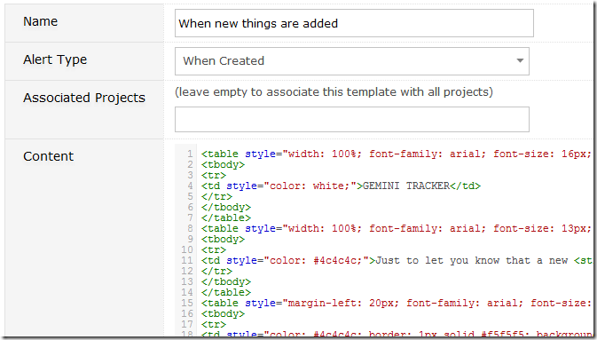
You can choose to design your own email alert template AND vary these templates by Project.
The very first thing to note is that with Gemini 6 any page can be your home page after login. Just pin any page and make it the first card in your Workspace bar:
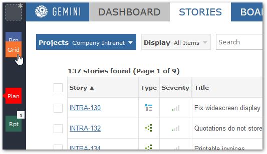